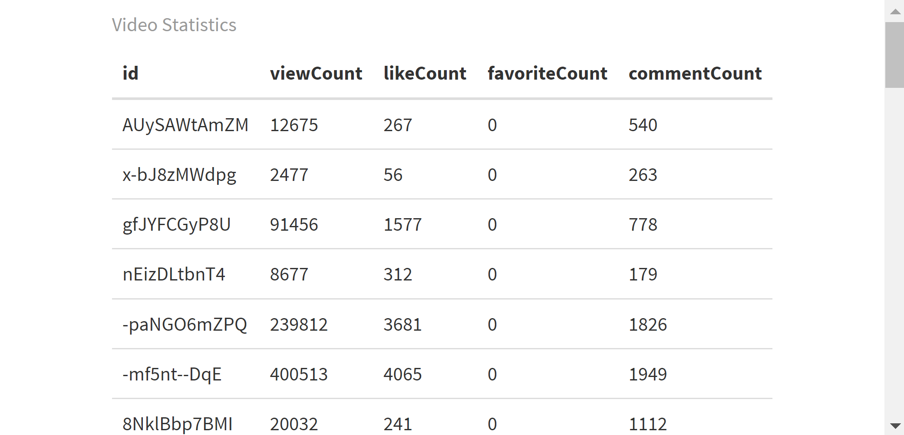

Analyzing Youtube data using Youtube API
In this assignment, I use the tuber package in R to download Youtube video statistics and comment data from CNN News youtube channel. For this, I first created a new credential for OAuth Client ID from Google Cloud Console to download the data from the Youtube API. The credentials are hidden from the code below because they are not supposed to be disclosed publicly.
The code is divided into two parts: in the first part below, I download and analyze the statistics of all the videos published on CNN news channel YT account.
# Sample program for using tuber to collect YouTube data
# Packages: tuber, tidyverse, lubridate, stringi, wordcloud, gridExtra, httr
# Website: https://cran.r-project.org/web/packages/tuber/vignettes/tuber-ex.html
#
install.packages("tuber")
install.packages("tuber", dependencies = TRUE)
library(tuber)
library(tidyverse)
library(lubridate)
library(stringi)
library(wordcloud)
library(gridExtra)
library(httr)
## Be sure to get the correct credentials
## Create a project for web application
## https://console.developers.google.com
## 1. Enable APIs and services
## 2. Choose YouTube Data API v3
## 3. Create a new credential for OAuth Client ID from Google Cloud Console, save the Json file and copy the client ID and client secret and paste in code below.
## Authorization of API ##
credentials_file1 <- "File path/clientsecretfile1.json"
yt_oauth(app_id = "client ID", "client secret", token="credentials_file1")
# Find the channel ID for CNN in the source page ("UCupvZG-5ko_eiXAupbDfxWw")
# Alternatively, from get_video_details
## Getting Channel stats from Youtube API
cnnnews_stat = get_channel_stats("UCupvZG-5ko_eiXAupbDfxWw")
cnnnews_detail = get_video_details(video_id = "jdM8EauQ1Bs")
## Getting video stats ##
curl::curl_version()
httr::set_config(httr::config(http_version = 0)) # Fix curl issue
cnn_videos = yt_search(term="", type="video", channel_id = "UCupvZG-5ko_eiXAupbDfxWw")
content_details <- list_channel_resources(filter = c(channel_id = "UCupvZG-5ko_eiXAupbDfxWw"), part="contentDetails")
# Uploaded playlists:
playlist_id <- content_details$items[[1]]$contentDetails$relatedPlaylists$uploads
# Get videos on the playlist
vids <- get_playlist_items(filter= c(playlist_id=playlist_id))
# Video ids
vid_ids <- as.vector(vids$contentDetails.videoId)
# Function to scrape stats for all vids
get_all_stats <- function(id) {
get_stats(id)
}
# Get stats and convert results to data frame
res <- lapply(vid_ids, get_all_stats)
res_df <- do.call(rbind, lapply(res, data.frame))
head(res_df, n=50)
# Print the results in a table
library(knitr)
install.packages("kableExtra")
library(kableExtra)
kable(res_df, format = "html", caption = "Video Statistics") %>%
kable_styling(full_width = FALSE)
In the next part, I download all the video comments from all the videos published in the last one month beginning Novmber 1, 2023 on CNN’s channel. This is because it takes a long time to download thousands of comments on every single video and YouTube API’s quota restrictions don’t allow for so many queries in a short time period. SO, for the purpose of this illustration, I have restricted the comments to only those from videos published since November 1, 2023 on CNN’s channel on Youtube. After downloading the comments, I use Quanteda package in R to analyze the comments and visualize them in the form of a word cloud as shown below.
## Getting video comments ##
# Getting comments for a specific video of CNN
samplecomment = get_all_comments(c(video_id = "jdM8EauQ1Bs"), max_results = 600)
# Getting all the video's comments in the past one month (may take a long time and quota restrictions might enforce for the day!)
cnn_videos1 = cnn_videos %>%
mutate(date = as.Date(publishedAt)) %>%
filter(date > "2023-11-01") %>%
arrange(date)
cnn_comments = lapply(as.character(cnn_videos1$video_id), function(x){
get_comment_threads(c(video_id = x), max_results = 100)
})
## Analyzing comments using Quanteda
# Combine comments into a data frame
all_comments <- do.call(rbind, cnn_comments)
# Check the structure of the comment data
str(all_comments)
# View the first few rows of the data frame
head(all_comments)
# Calculate the number of comments per video
comment_counts <- table(all_comments$videoId)
# Combine comment text into a single character vector
comment_text <- all_comments$textDisplay
comment_text
# Install and load necessary packages
install.packages(c("quanteda", "tm", "wordcloud"))
library(quanteda)
library(tm)
library(wordcloud)
# After checking that all_comments$textDisplay contains the comment text
comments_corpus <- Corpus(VectorSource(comment_text))
# Preprocess the text
comments_corpus <- tm_map(comments_corpus, content_transformer(tolower))
comments_corpus <- tm_map(comments_corpus, removePunctuation)
comments_corpus <- tm_map(comments_corpus, removeNumbers)
comments_corpus <- tm_map(comments_corpus, removeWords, stopwords("english"))
comments_corpus <- tm_map(comments_corpus, stripWhitespace)
comments_corpus
# Convert the tm corpus to a quanteda corpus
quanteda_corpus <- corpus(comments_corpus)
# Create Document-Feature Matrix (DFM)
dfm_matrix <- dfm(quanteda_corpus)
# Calculate term frequencies
term_freq <- rowSums(dfm_matrix)
# Generate a word cloud
wordcloud(comments_corpus, max.words = 100, scale = c(3, 0.5), colors = brewer.pal(8, "Dark2"))
The word cloud depicts that in the past one month, the words most frequently discussed in the comments section of CNN’s videos were words related to the ongoing Israel-Hamas war: “Israel”, “Palestine”, “hamas”, “world”, “president”, “children”, “america”, “war”.